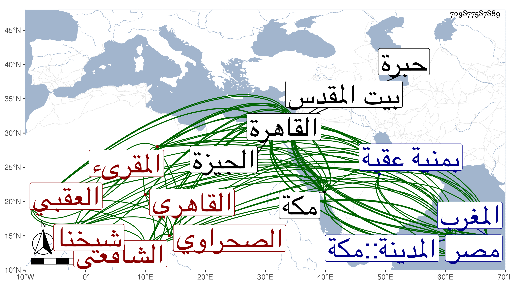

0902Sakhawi.DawLamic.ITO20230111-ara1.EIS1600.709877587889
Biography ID: 709877587889
855
رضوان بن محمد بن يوسف بن سلامة بن البهاء بن سعيد شيخنا مفيد القاهرة محدث العصر الزين أبو النعيم وأبو الرضا العقبي ثم القاهري الصحراوي الشافعي المقرىء ولد في صبح جمعة من رجب سنة تسع وستين وسبعمائة بمنية عقبة بالجيزة ونشأ بخانقاه شيخو فحفظ القرآن والتنبيه وجود بعض القرآن على اسماعيل الانبابي وتلا بالسبع إفرادا إلا نافعا فلم يكملها على النور أبي الحسن علي الدميري المالكي أخي بهرام وسمع عليه مواضع كثيرة من القرآن جمعا لها وللثلاث أيضا وفي البحث في شرح الجعبري للشاطبية ونهج الدماثة وقرأ الكثير من الشاطبية وجميع الرائية عليه وعلى الشمس الغماري جمعا للسبع إلى رأس الحزب الأول من الاعراف وكذا من ثم إلى رأس الحزب في القصص مع إضافة يعقوب إليها وعلى الزكي أبي البركات الاسعردي المالكي جمعا للثمان بتمامها وقرأ عليه بعض العقد وسمع عليه بعض المطلوب في قراءة يعقوب وكلاهما لشيخه أبي حيان وعلى كل من الشرف يعقوب الجوشني المالكي والشمس النشوي الحنفي جملة من القرآن للسبع وعلى أولهما بعض الشاطبية وعلى النور بن سلامة بمكة بعضه للسبع أيضا وعلى ابن الجزري الفاتحة وإلى المفلحون بالعشر داخل الكعبة وعلى ابن الزراتيتي جملة كثيرة من القرآن بالأثني عشر وقرأ عليه كلا من التيسير والعنوان والعقيلة والارشاد الصغير وغيرها وبعض القرآن على الفخر عثمان البرماوي وبحث عليه في شرحي الفاسي والجعبري للشاطبية وقرأ الشاطبية على ناصر الدين بن كشتغدي ولقي من القراء أيضا العسقلاني وابن القاصح صاحب المصطلح وغيره فسمع عليهما بعض القرآن بالجامع الطولوني والفخر البلبيسي الضرير إمام الأزهر فسمع عليه به بعضه أيضا وكذا أخذ القراءات عن الشمس الشطنوفي ويرويها بالاجازة عن التنوخي وابن السكاكيني في آخرين واجتهد فيها جدا ، وحضر دروس البلقيني وابن الملقن وكذا الصدر المناوي والعز بن جماعة ولازمهما وكذا الصدر الابشيطي كثيرا وتفقه بهم وبالشموس الثلاثة القليوبي والغراقي والشطنوفي وأذن له ثلاثتهم مع ابن الجزري في التدريس بل وأذن له ابن سلامة المكي في الافتاء أيضا وأخذ العربية عن ثالث الشموس وعن الغماري أيضا في شرح الألفية لابن الناظم والفصول لابن عصفور وبعض الحماسة وغير ذلك وأصول الفقه عن أولهم وعن ابن جماعة أيضا والفرائض والحساب عن ثانيهم ، وكذا أخذ في هذه العلوم الأربعة مع الكلام والتصريف والمنطق والمعاني والبيان والجدل عن البساطي وأذن له وكتب عن العراقي جملة من أماليه ثم عن ولده الولي وربما استملى عليه . وناب في عقود الأنكحة بالقاهرة وضواحيها عن الصدر المناوي ، وولي مشيخة الاسماع بالشيخونية بعد الزين الزركشي والخدمة بالاشرفية المستجدة بالعنبريين بسفارة شيخنا حيث قال لواقفها وهما فيه هذه جنة ولا تصلح خدمتها إلا لرضوان فاستحسن ذلك وقرره والخطابة بجامع المرج وغير ذلك ، وحج مرارا وجاور مرتين وزار بيت المقدس والخليل وما تيسرت له رحلة نعم أخذ بالحرمين عن جماعة كالجمال بن ظهيرة وقريبه الكمال ، وكذا سمع ببيت المقدس على بعض من لم يعلمه لصغره شيئا فإن والده سافر إليه فلحقته أمه به وذلك في سنة ست وسبعين وسبعمائة وهو أول شيء سمعه واشتدت عنايته بالرواية وبالغ في الطلب وقرأ بنفسه الكثير واستوفى من الكتب بالسماع والقراءة بالعلو وغيره أصول الاسلام الستة ومسند أحمد إلا بعضه ملفقا ومسند الشافعي تاما وموطأ يحيى بن يحيى والقعنبي والبعض من كل من موطأ أبي مصعب ويحيى بن بكير ومسند أبي حنيفة وجميع شرحي معاني الآثار للطحاوي والسنن للدارقطني والسيرة لابن هشام وجملة ، وأخذ عمن دب ودرج لكنه لم يكثر عن القدماء من شيوخه بل عن أهل الطبقة الوسطى فمن دونهم حتى كتب عن رفقائه بل ومن دونه أيضا ، ومن قديم مسموعه مما لم أسمعه عليه على التقي بن حاتم قطعة من السنن الكبرى للبيهقي وعلى ابن أبي المجد المجلس الأخير من مسند الشافعي ومن علوم الحديث لابن الصلاح ومن المقامات الحريرية وعلى المطرز والغماري الكثير من أبي داود والختم منه على الابناسي وعليهما والجوهري الكثير من ابن ماجه وعلى العراقي الكثير من أماليه ، وانفرد في الديار المصرية بمعرفة شيوخها وما عندهم من المسموع ونحو ذلك لاستقصائه في تتبعه له وصار المعول عليه فيه وعرف العالي والنازل وكتب بخطه الجيد الكثير من الكتب والاجزاء والطباق وخرج كثيرا لغيره والبعض لنفسه كالاربعين المتباينات وكذا خرجها لولده ولم يتعد لغير ذلك من هذا الفن وبالغ فيه وتوسع جدا مع مشاركة في الفضائل ونظم ونثر وقد حدث بأخرة بالكثير من الكتب والاجزاء وأقرأ القرآن وتخرج به جمع من الفضلاء ، وكنت ممن تخرج به وقرأت عليه الكثير وانتفعت بتهذيبه وارشاده وأجزائه ، وكان كثير المحبة لي والاقبال علي والتمس مني بأخرة جمع شيوخه ومروياته فما تيسر وتوسم في المعرفة ووصفني بالجميل ودعا لي كثيرا وأرجو أن أنتفع بذلك فقد كان خيرا دينا ساكنا بطيء الحركة ربض الخلق صادق اللهجة غزير المروءة متواضعا منطرح النفس وقورا بساما مهابا بهيا نير الشيبة حسن السمت كثير التلاوة والعبادة غاية في النصح سليم الباطن محبا في الحديث وأهله ، سمحا بإعارة كتبه وأجزائه منجمعا عن الناس بتربة السيفي قجماس الظاهري بالقرب من البرقوقية قانعا باليسير عديم النظير على طريقة السلف قل أن ترى العيون في مجموعه مثله طار اسمه بمعرفة الأسانيد والشيوخ والمرويات ، وأرسل للسلطان أبي فارس صاحب المغرب أربعين حديثا خرجها له ولأولاده بالاجازة فأثابه عليها وكذا خرج للجلال البلقيني والنور التلواني وخلق ، وقرض له شيخنا بعض ذلك أو جميعه وكان كثير الميل إليه بحيث ذكره في القسم الأخير من معجمه وشهد له إذ ذاك بأنه أمثل من تخرج على طريقة طلب الحديث وقدمه للاستملاء عليه فاستمر وأثبت اسمه مجردا في ورقة كتبها في القراء بالديار المصرية في وسط هذا القرن لكونه كان أيضا قصد فيها لتقدم عمله فيها حسبما بينته بحيث قرأ عليه غير واحد من الأعيان القراءات مع انه كان تاركا وشهد عليه في سنة إحدى وخمسين في إجازته بعض من قرأ عليه القراءات فوصفه فيها بالشيخ الامام الفاضل شيخ الاقراء والتحديث الحافظ فلان ، وفي أخرى قبلها بعشر سنين بالشيخ الامام العالم العلامة الاوحد المحدث الحافظ الضابط المقرىء المجود ، هذا مع سلوك صاحب الترجمة معه الأدب إلى الغاية حتى إنني سمعته يسأل أيما أكبر أنت أو هو فقال أقول كما قال العباس رضي الله عنه أنا أسن منه وهو أكبر مني رحمهما الله تعالى . ومدحه بقصيدة حسنة ذكرتها في الجواهر . ولم يزل على طريقته حتى مات في يوم الاثنين ثالت رجب سنة اثنتين وخمسين بسكنه بتربة قجماس ، ودفن بها بعد أن شهد الصلاة عليه جمع جم كشيخنا وتقدم والحنبلي والاقصرائي فمن دونهم وتأسف الناس خصوصا أهل الحديث على فقده ، ولم يخلف بعده في معناه مثله ، وهو في عقود المقريزي باختصار ، وترجمته تحتمل أزيد من هذا رحمه الله وإيانا ونفعنا ببركته . ومما كتبته عنه من نظمه مما أنشدنيه لفظا :
| الحب فيك مسلسل بالأول | فامنن ولا تسمع ملام العذل |
| وارحم عباد الله يا من قد علا | من يرحم السفلى يرحمه العلي |
| وخف العذاب ورج عفوا أن ترم | شربا من الندب الرحيق السلسل |
